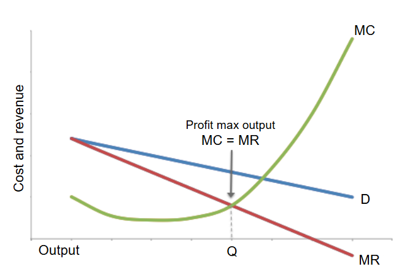

Firms may have a range of econmic objectives: sales maximisation, revenue maximisation, profit maximisation, survival/loss minimisation and satisficing. However in theory, the overriding objective is profit maximisation.
Profit maximisation involves achieving the greatest difference between total revenue and total cost (including normal profit).

If a firm produces to the left of quantity Q, it is sacrificing potential profit and can increase profits by producing more.
If a firm produces to the right of quantity Q, it is making a loss on each sucessive unit, which will lower total profits.
Producing at Q where marginal cost = marginal revenue is where the maximum profit is.
However there are several reasons why firms do not operate at the profit maximisation level of output:
These objectives are known as managerial or behavioural objectives of firms.
Under specific circumstances, firms may have the short-term objective of survival, which involved minimising losses.
This is most likely to be when a firm is facing serious unexpected external threats such as a downturn in the economy due to external shock like COVID-19. Survival in such circumstances becomes a priority to allow firms to develop a revised strategy to stay in business.
There is a limit to the time and scale of losses than can be tolerated. If a firm is not covering variable costs, then closure would be the only sensible outcome.
Profit satisficing occurs when a firm seeks to make a reasonable or minimum level of profit, sufficient to satisfy the shareholders but also keeps stakeholders happy, such as the workforce and consumers.
This is different from profit maximisation because firms may choose to sacrifice short-term profits to satisfy expectations. Workers will expect pay rises and improvements in working conditions, which may raise costs. However, consumers will except to see prices falling.
Profit satisficing can also be a feature of firms that have enjoyed high market share over a long period of time. Complacency can lead to firms losing focus on their cost structure or failing to devote resources to product/process innovation. This can lead to a loss of profits.
This objective is to maximise the number of sales rather than total revenue from sales.
Sales maximisation will lead to greater output than revenue maximisation.
With sales maximisation, the firm would increase output up to the break-even output where the total revenue just covered the total cost. A higher output than this implies loss-making behaviour. The only situation where loss-making behaviour would be possible is where the firm could use profit from one part of the firm to offset losses made else where. This is called cross-subsidisation.
This objective is related to the principal-agent problem. Senior managers tend to be more interested in increasing sales and maximising revenue because managerial salaries and bonuses are based on total revenue, not profits.
This means that a firm with a revenue maximising objective will produce a higher output than a firm with a profit maximising objective. The firm may produce where MC > MR.
Price discrimination is a selling strategy that charges customers different prices for the same product or service.
There are three types of price discrimination:
Price discrimination favors producers at the expense of consumers. It can be used by firms to increase profits by reducing consumer surplus and converting this into producer surplus. Government regulation is often necessary to avoid exploitation of consumers.
A pricing policy that is applied in monopolies and oligopolies. It involves firms setting a lower short-run price to deter new firms from entering their market. At this new price, the established firm no longer maximises profits, but this is only expected for a short period of time. The lower price effectively acts as a barrier to entry.
This occurs when a firm feels threatened when a new firm enters a market. The established firm responds by setting a price that is so low the new firm has no choice but to match it. The new firm cannot make a profit; in time, the new firm will be forced out of the market.
Predatory pricing can also be applied by two established firms in a market. If one firm believes its rival is gaining market share, it can cut prices to protect its own market share. If these cuts are enough and sustained over time, the rival firm may be forced to leave the market.
Price leadership is a common feature of oligopolisic markets. All firms in the market accept the price that is set by the leading firm, which is often the firm with the largest market share. They then alter their own prices in line with those of the leader. It is a way of avoiding price competition yet maximising total profits for all firms. However, for firms with higher costs, they may lose profits when the leading firm announces a price decrease.
Profit satisficing: a firm's objective to make a reasonable or minimum level of profit.
Sales maximisation: a firm's objective to maximise the volume of sales.
Cross-subsidisation: profits from one part of a firm are used to offset losses made elsewhere in the business.
Revenue maximisation: a firm's objective to maximise total revenue.